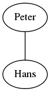

Graphviz in Sphinx¶
Vor einiger Zeit habe ich PlantUML in Sphinx integriert, um schnell und einfach Diagramme zeichnen zu können. Bei einer kleinen Recherche habe ich nun herausgefunden, dass auch Graphviz in Sphinx ohne größere Probleme unterstützt wird.
Der Artikel über PlantUML findet man hier: Effektive Diagrammerstellung mit PlantUML
Vorgehen¶
Zuerst muss Graphviz installiert werden. Unter Linux geschieht dies unter anderem über:
sudo apt-get install graphviz
Danach muss in der Sphinx conf.py nur noch die Unterstützung von Graphviz aktiviert werden:
extensions = [
'sphinx.ext.extlinks',
'sphinx.ext.intersphinx',
'sphinx.ext.todo',
'alabaster',
'ablog',
'sphinxcontrib.plantuml',
'sphinx.ext.graphviz', # Dies ist die wichtige Zeile
]
Ich habe die anderen Extensions aus unserer Sphinx-Config mal drin gelassen, damit für Leute, die Der perfekte Blog für Entwickler gelesen haben, die Config identisch ist.
Das war’s. Danach kann man auch schon mit der Benutzung starten.
Benutzung¶
Die Graphviz-Diagramme lassen sich ähnlich wie die PlantUML-Diagramme integrieren.:
.. graph:: foo
"Peter" -- "Hans";
die führt zu
Die Dokumentation über die Sphinx-Erweiterung sphinx.ext.graphviz ist hier zu finden: http://sphinx-doc.org/ext/graphviz.html
Graphviz ist um einiges mächtiger als PlantUML. Dadurch allerdings auch nicht so einfach zu benutzen bzw. die Benutzung für UML-Diagrammen kommt dort an ihre Grenzen.
Einen umfangreichen Artikel über die Möglichkeiten mit Graphviz ist z.B. http://4webmaster.de/wiki/Graphviz-Tutorial
Die offiziellen Referenzen zur Sprache sind hier abgelegt: http://www.graphviz.org/Documentation.php